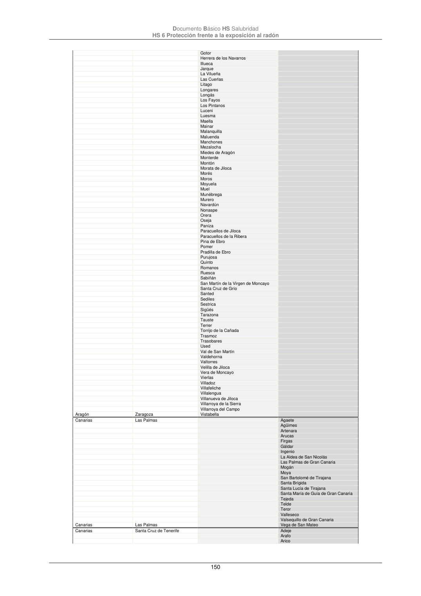

DB-HS Salubridad · edición 2022-06-14 · capa oficial
Documento DB-HS-oficial · SHA-256 del PDF 68df3caacc95f71aee2ec1ba7b2c65ae66155c21e3a8785521b8fdd4fd640d3b
Página física 150 de 184.
Copia fiel del PDF fuente · Fuente oficial
Ficha de la disposición en la fuente oficial
Formato: Texto de la página (Markdown)
Documento Básico HS Salubridad HS 6 Protección frente a la exposición al radón 150 Gotor Herrera de los Navarros Illueca Jarque La Vilueña Las Cuerlas Litago Longares Longás Los Fayos Los Pintanos Luceni Luesma Maella Mainar Malanquilla Maluenda Manchones Mezalocha Miedes de Aragón Monterde Montón Morata de Jiloca Morés Moros Moyuela Muel Munébrega Murero Navardún Nonaspe Orera Oseja Paniza Paracuellos de Jiloca Paracuellos de la Ribera Pina de Ebro Pomer Pradilla de Ebro Purujosa Quinto Romanos Ruesca Sabiñán San Martín de la Virgen de Moncayo Santa Cruz de Grío Santed Sediles Sestrica Sigüés Tarazona Tauste Terrer Torrijo de la Cañada Trasmoz Trasobares Used Val de San Martín Valdehorna Valtorres Velilla de Jiloca Vera de Moncayo Vierlas Villadoz Villafeliche Villalengua Villanueva de Jiloca Villarroya de la Sierra Villarroya del Campo Aragón Zaragoza Vistabella Canarias Las Palmas Agaete Agüimes Artenara Arucas Firgas Gáldar Ingenio La Aldea de San Nicolás Las Palmas de Gran Canaria Mogán Moya San Bartolomé de Tirajana Santa Brígida Santa Lucía de Tirajana Santa María de Guía de Gran Canaria Tejeda Telde Teror Valleseco Valsequillo de Gran Canaria Canarias Las Palmas Vega de San Mateo Canarias Santa Cruz de Tenerife Adeje Arafo Arico

Datos candidatos: compruebe celdas y notas en el PDF.